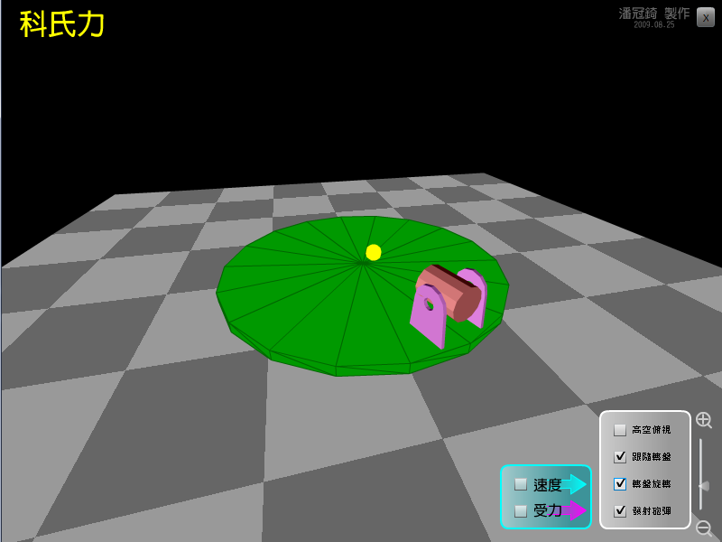

這個動畫的目的是要介紹什麼是科氏力，科氏力屬於假想力的一種，只有在旋轉的座標戲中，才會看到科氏力。
動畫中的旋轉台旋轉方向與地球的北半球相同，發射砲彈時，砲彈不受外力作直線運動，但在旋轉台上的觀察者會覺得
砲彈受到向右的科氏力。
------------------------------------
試試看：怎樣可以弄出科氏力呢？觀察科氏力如何改變炮彈的軌跡。

↑動畫截圖。
檔案下載
[PC exe]